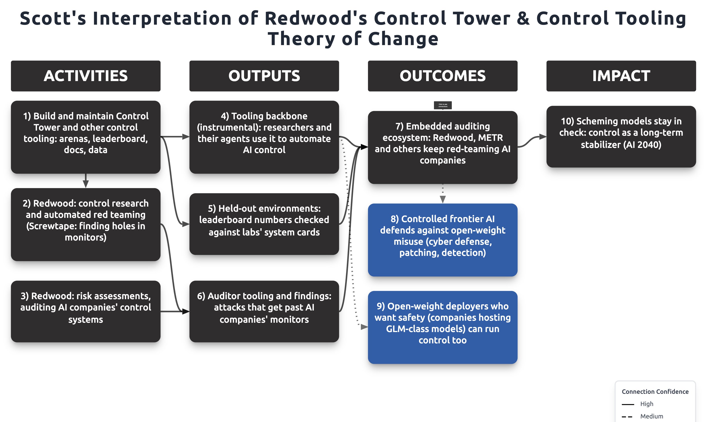

Bottlenecks
Where AI safety tooling gets stuck, through a Theory of Constraints lens.
TL;DR
AI safety tooling moves at the speed of its scarcest people, not its code: the researchers who set direction, the maintainers who review, and the engineers who keep it working.
- Control research and audits run on shared open-source software such as Control Tower.
- That software is held back by two things: human review, and feedback from real users. Poor docs keep both scarce.
- Plenty of capable people want in, but they can't get started without well-scoped roles and senior maintainers who can absorb their work.
Control Tower
Theory of change (image)


The loop
Docs stay poor → fewer new users succeed → less good feedback → maintainers guess, more support load → less time for docs and review → docs stay poor.
Numbers
"People get upset because using CT is painful," for example each migration from v5 to v6 to v7.
What would loosen it
- Review capacity: more people who can review PRs that end up merged. Faster bots don't help; human review is the wait.
- User feedback: docs good enough that a new researcher finishes a first eval run alone, then reports what broke.
- The loop: improving any one link (better docs, or protected review time) turns the vicious cycle into a virtuous one.
Talent
Theory of change (image)
Stock and flow
What I heard at EAG NYC (October 2026)
They have only "a handful" of people who have "built and run decent offensive cyber evals" or done "incident investigation, but where the model, or the system of agents, are the threat actor." They want to "build a bunch of capacity there, and I would want to bring partners in to do it."A leader of a frontier AI embedded-evaluation team
"Bounty Bench, no model will ever score above twenty percent. ... It's broken. CVE Bench is saturated. Exploit Bench is also saturated ... because the grader is inside of the sandbox. ... I feel like all of the good cyber evals are probably internal, closed source ... There are no good open source cyber evals, I think."An evaluator who audits AI evals
Data and sources
| Stage | Measure | Value |
|---|---|---|
| PR opened | PRs created 2026-09-21 to 2026-10-21 | 535 (54 still open, 32 drafts) |
| Human review (constraint 1) | PRs with a review from a human other than the author | 186 |
| Human review | Median hours, opened to first human review | 18.6 (75th percentile 56) |
| Merged | Merged PRs; with no human review | 362; 200 |
| Merged | Median hours, opened to merged | 6.1 |
| Release | Merged per week (Sep 21, 28, Oct 5, 12, partial 19) | 77, 71, 87, 94, 33 |
| Feedback (constraint 2) | Issues filed by humans (github-actions excluded) | 6 from 4 people |
| Docs & setup | Of those, docs gaps (judged from titles) | 2 |
| Trustworthy result | Outside users completing a first eval run | to measure |
Data as of 2026-10-21, last 30 days, public Control Tower GitHub. Source: gh pr list -R linuxarena/control-tower --state all --search "created:>=2026-09-21" and gh issue list. Bots (cursor, claude, copilot) counted separately. Constraint 1 is the view of a Control Tower engineer, relayed by Scott.
Working draft, Oct 21, 2026.